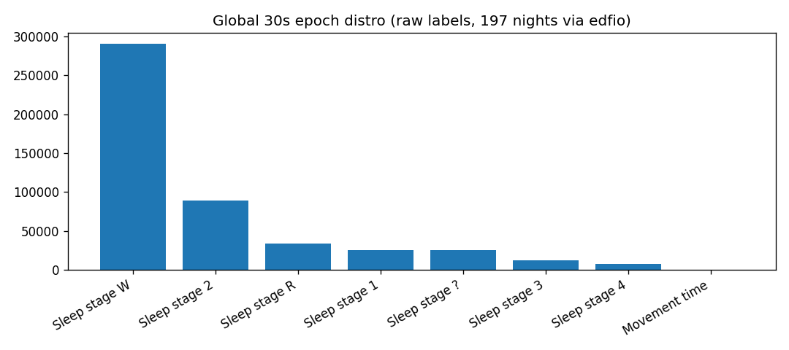
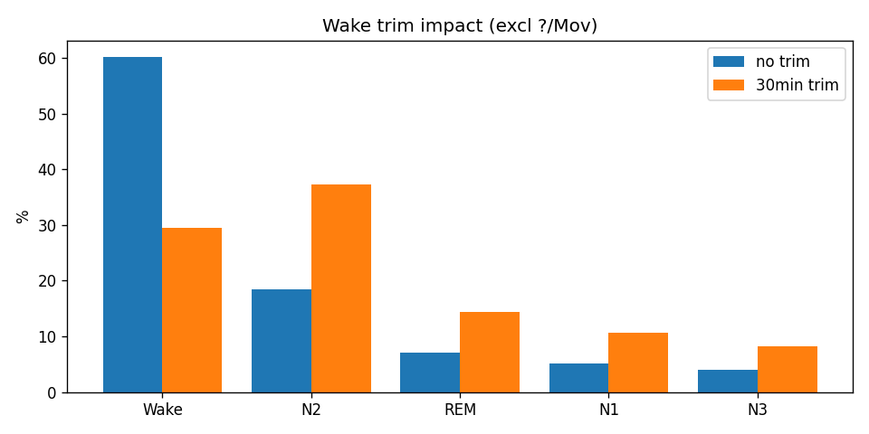
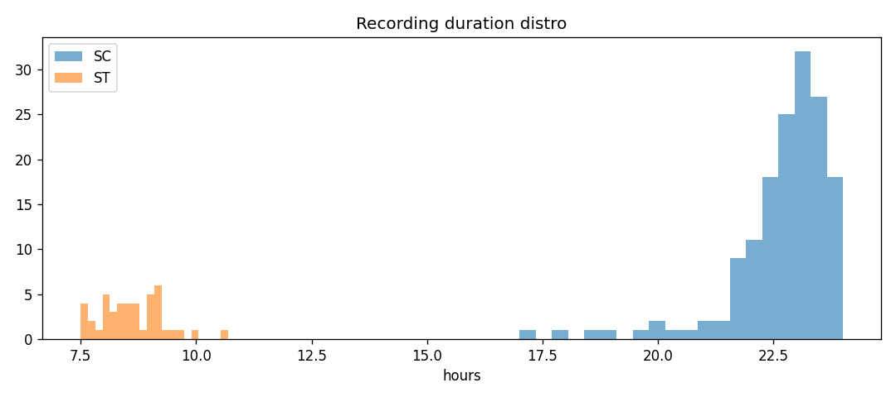
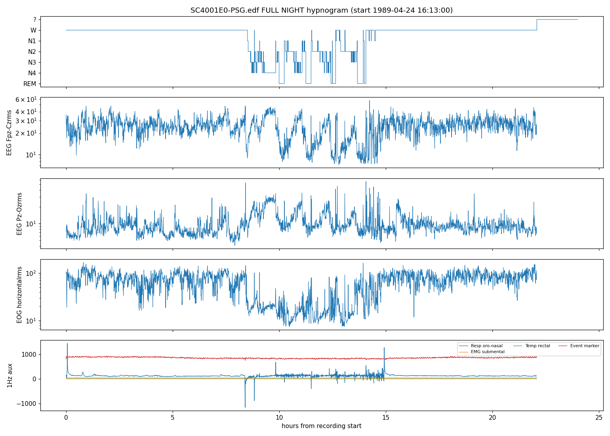
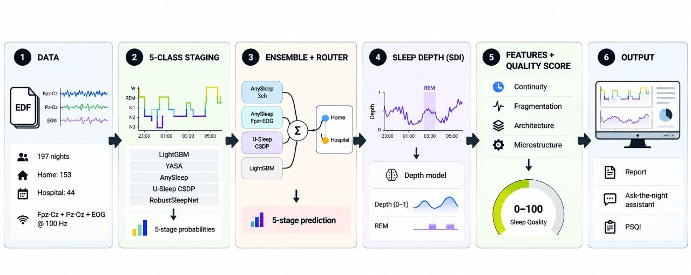

تشخیص پنج مرحله خواب با اطمینان سنجیدهشده، مدل عمق خوابِ آموزشدیده روی داده ما،
۹۶ سنجه شبانه، یک نمره کیفیت قابلتوضیح و گزارش ساده با LLM —
همه روی ۱۹۷ شب واقعی Sleep-EDF.
Router (Home→Ensemble, Hospital→AnySleep) — 0.8458 Macro-F1حداقل سیگنال: Fpz+EOG = 99.5٪SQI آموزشدیده روی داده ما~۲ دقیقه / شب روی CPU
«بنچمارک ما» یعنی چه؟ از اولین خواب تا آخرین خواب، بهعلاوه
نیمساعت بیداری در دو سر — همان روشی که در مقالات این حوزه استفاده میشود.
اینطور بیداری طولانی روزانه از حساب خارج میشود و عددی که میماند، واقعاً «خواب» را میسنجد.
دادهها به زبان ساده
۱۹۷ شب خواب از ۱۰۰ نفر داریم: ۱۵۳ شب خانگی و ۴۴ شب بیمارستانی. شبهای خانگی طولانیاند
(تقریباً یک شبانهروز، با چرت روز) و شبهای بیمارستانی حدود ۹ ساعت.
همه شبها دو کانال مغزی و یک کانال چشم دارند؛ عضله دو نوع ثبت دارد و سنسور اکسیژن و قلب
نداریم — پس هرچه مربوط به تنفس و قلب است، «سنجیده نشده» اعلام میکنیم، نه اینکه حدس بزنیم.
برای مقایسه منصفانه، هر شب را از شروع تا پایان خواب در نظر گرفتیم (۲۳۷٬۹۳۶ بخش ۳۰ثانیهای)
و آموزش و آزمون را بر اساس «فرد» جدا کردیم تا هیچ فردی در هر دو طرف نباشد.
در این داده مرحله N1 کم و مورداختلاف است و گذرِ بین مراحل قانونمند؛ همین دو نکته مسیر
مدلسازی ما را تعیین کرد.

توزیع خام کلاسها — بیداری غالب

اثر برش در بنچمارک ما

مدت ضبط: دو قله SC/ST

شب SC4001 (۲۲h): بیداری روزانه سپس خواب چرخهای
۳ · همه مدلها، همه متریکها — چیزی ساده نشده
جدول کامل نتایج — با «بنچمارک ما» (اولین تا آخرین خواب، ±نیمساعت؛
237,936 بخش ۳۰ثانیهای) و روی کل داده معتبر
وزنهای ترکیب روی داده آموزش انتخاب شدهاند، نه با نگاه به داده آزمون؛
دو ردیف LightGBM چند سنجه کمتر دارند (پوشش 237,310).
SleepFMStager پارک شد (خروجی ثابت، مستند، بدون عدد جعلی) و
SLEEPYLAND بهخاطر تحویل ناقص حذف شد؛ هر دو با شواهد در مخزن باقی ماندهاند.
۴ · قهرمان هر کلاس
هیچ مدلی همه مراحل را نمیبرد — انتخاب بر اساس کلاس و منبع داده
مرحله
بهترین سیستم
F1
Recall
Precision
دومین · بهترین recall
Wake
Ensemble (AnySleep + RobustSleepNet)
0.941
0.928
0.955
AnySleep 3ch 0.941 · YASA recall 0.993
N1
Ensemble + class bias
0.638
0.691
0.592
Ensemble v2 0.635
N2
Ensemble (۴ جریان)
0.892
0.904
0.881
Ensemble + bias 0.891
N3
Ensemble + class bias
0.833
0.830
0.837
Ensemble v2 0.833 · LightGBM recall 0.873
REM
Ensemble (۴ جریان)
0.915
0.915
0.915
Ensemble + bias 0.915
قهرمان بر اساس منبع (چرا Router ساختیم)
برش
بهترین
F1
خانه SC — REM
U-Sleep CSDP
0.919
بیمارستان ST — N2
AnySleep 3ch
0.921
بیمارستان ST — N3
AnySleep 3ch
0.873
بیمارستان ST — REM
AnySleep 3ch
0.949
بیمارستان ST — N1
Ensemble (0.7ANY + 0.3RSN)
0.745
خوانش
در خانه، REM با U-Sleep برنده است؛ در بیمارستان، AnySleep
تقریباً همهچیز را میبرد. N1 سختترین کلاس است
(0.638 کلی، ولی 0.745 در بیمارستان) — منبع داده
از خود مدل مهمتر است. این جدول پایهی منطقی Router است.
۵ · مدلها و روش پیشنهادی ما
Ensemble برای تنوع و robustness؛ Router برای domain shift — هر دو را داریم
خانه → Ensemble (0.836) · بیمارستان → AnySleep (0.878)
0.8458
قانون قطعی از metadata ضبط، نه یک مدل یادگرفته
چرا ensemble؟ (شاهد عددی)
ترکیب ضعیفِ متفاوت (LightGBM) کمک میکند
(0.8267→0.8307)؛ قویِ همخانواده (RSN) ضرر میزند
(0.8108).
شکاف خانه↔بیمارستان از 0.069 به 0.029 کم میشود —
سیستم متوازن، نه فقط بالاترین عدد.
Router یا Ensemble؟ هر دو سودمندند
اگر domain shift بین خانه/بیمارستان نداشتیم، ensemble تنها کافی بود —
مدل آماده است و یک مسیر واحد، سادهتر.
چون shift واقعی است (دامنه ۲–۳×، نرخ EMG، چرت روزانه) router هر cohort را به بهترین سیستمش میفرستد.
هزینه router ~صفر است: از metadata ضبط استفاده میکند، نه یک شبکه اضافه.
در خانه با همین مسیر میشود حداقل مجموعه کافی سیگنال را گرفت: Fpz+EOG
فقط −0.004 و Fpz تنها 97٪ امتیاز کامل.
ما برای staging آموزش نمیدهیم (دادههای برچسبدار کاملاند و مدلهای مرجع خوبی هست)؛ برای SQI آموزش میدهیم
چون چیز جدیدی است و کالیبراسیون روی داده ما میخواهد — صفحه بعد.
۶ · توضیحپذیری + اعتماد به مدل
مدل قواعد AASM را خودش کشف کرد — و میداند کجا حدس میزند
SHAP: نگاشت یکبهیک با پزشکی
مرحله
محرک اول
SHAP
معادل بالینی
Wake
eog_ptp
1.30
حرکت چشم
N1
alpha
0.56
محو آلفا
N2
sigma
0.53
spindle
N3
eeg_std
1.88
موج آهسته دامنهبلند
REM
emg_rms
0.48
آتونی عضلانی
ابلشن سیگنال: افزودن EOG به N1 +0.027 و
REM +0.026؛ Fpz از Pz همهجا بهتر (N3 +0.048)؛
بهترین زوج Fpz+EOG با بازیابی REM 0.913.
توجه مدل هم همین را دید: EOG در REM وزن 0.52 و در N3 فقط
0.07.
اطمینان مدل در برابر برچسب پزشک
باند اطمینان
سهم شب
دقت واقعی
سیاست
≥0.9
30.3٪
99.5٪
قبول خودکار
0.7–0.9
37.4٪
90–96٪
نمایش با اطمینان
0.5–0.7
25.0٪
64–78٪
بازبینی
<0.5
7.4٪
43–54٪
بازبینی اجباری
رابطه یکنوا: دو سوم شب با دقت ≥90٪ و فقط
7٪ شب وقت متخصص را میگیرد — صف بازبینی خودش نوشته میشود.
سرویس برای هر بخش ۳۰ثانیهای، هر پنج احتمال را میدهد و بخشهای مشکوک را
علامتدار میکند.
۷ · مسیر یک شب در SleepLens
از سیگنال خام تا گزارش قابلفهم — هر گام، ورودی گام بعد است
در اسلاید قبل دیدیم Router چگونه مدل مرحلهبندی را انتخاب میکند؛ اینجا مسیر کامل را میبینیم:
خروجی staging و مدل عمق به سنجههای شبانه، نمره کیفیت و گزارش میرسد.

نمای کلی محصول: از مرحلهبندی و Router به مدل عمق، سنجهها و SQI-D؛ در پایان، گزارش و دستیار شبانه.
دو نمای مکمل از یک شب: مرحلهبندی میگوید «چه مرحلهای»؛ SDI نشان میدهد «چقدر عمیق».
ترکیب این دو، سنجههای شبانه و نمره کیفیت را میسازد.در ادامه: ۸ · سنجهها، ۹ · مدل عمق، ۱۰ · نمره کیفیت، ۱۱ · محصول
۸ · سنجههای شبانه — از اندازهگیری تا کاربرد
۹۶ ویژگی را در چهار خانواده میسازیم؛ هر خانواده پاسخ یک سؤال درباره خواب است
ورودی این بخش، هیپنوگرامِ مرحلهبندیشده و جریان پیوسته SDI است. سنجهها هم برای توضیح شب به کار میروند و هم، در موارد مشخص، نمره SQI-D را میسازند.
تداوم خواب · چقدر و با چه کارایی؟
استخراج:TST، کارایی خواب (SE)، زمان بهخوابرفتن (SOL)، بیداری پس از شروع خواب (WASO) و تأخیر REM.
کاربرد: توصیف مقدار و پیوستگی خواب؛ SE امتیاز میگیرد و SOL/WASO جریمههای سقفدار SQI-D را میسازند.
میانگین cohort:TST ۴۱۷ دقیقه · SE ۷۹٫۷٪
گسست خواب · شب چقدر تکهتکه بود؟
استخراج: شمار بیدارشدگیها، جابهجایی بین مراحل و شاخص گسست خواب (SFI).
کاربرد: آشکارکردن وقفههایی که درصد مراحل نشان نمیدهد؛ SFI وارد جریمه گسست در SQI-D میشود.
میانگین cohort:SFI ۲۰٫۸ بار در ساعت خواب
معماری خواب · چه مراحلی و با چه ترتیبی؟
استخراج: سهم N1/N2/N3/REM از زمان خواب (TST)، چرخهها و ماتریس گذار ۵×۵.
کاربرد: توضیح ترکیب و توالی شب؛ سهم N3 و REM هم در بخش معماری SQI-D امتیاز میگیرد.
میانگین cohort:N3 ۱۱٫۶٪ · REM ۲۰٫۶٪ از TST
عمق و ریزساختار · درون هر مرحله چه میگذرد؟
استخراج: منحنی SDI و شاخصهای AP/RB/CV/MDR/PR؛ توان باندهای EEG، امواج آهسته، spindle و آتونی EMG.
کاربرد:AP سهم عمق SQI-D را میسازد؛ سایر شاخصها برای تفسیر و جزئیات گزارش نمایش داده میشوند.
مرز داده: بدون SpO₂/ECG، آپنه و ضربان قلب «ارزیابینشده» هستند.
هیپنوگرام + جریان SDI
→
استخراج ۹۶ سنجه
→
SQI-D + گزارش شبانه
همه ویژگیها برای توصیف شباند؛ فقط سنجههای معتبر و مشخص وارد نمره میشوند. خروجیهای سنجیدهنشده جعل یا جایگزین نمیشوند.
۹ · مدل عمق خواب — آموزشدیده روی داده ما، نه صفرشات
بدنه اصلی مدل دستنخورده ماند؛ فقط بخش کوچکی روی داده خودمان تنظیم شد
چه چیزی و چطور آموزش دید
پایه: مدل عمق خواب مقاله (npj 2025) که از قبل روی دادههای دیگران آموزش دیده بود.
ما فقط ورودی کانالها و لایههای آخر را روی داده خودمان تنظیم کردیم
(حدود ۴ میلیون پارامتر)؛ بقیه مدل دستنخورده ماند.
آموزش با جداسازی افراد: ۸۰ نفر برای آموزش و
۲۰ نفر برای آزمون؛ در ۵ تقسیم تکرار شد و بهترین نتیجه در دور دهم به دست آمد.
ورودی: سیگنال مغز، عضله و چشم. سیگنال قلب در این داده نبود، پس از مدل حذفش کردیم.
نتیجه، مدلی مخصوص داده ماست؛ اعداد پیامدی مقاله اصلی به آن منتقل نمیشود.
نتیجه روی ۴۰ شبِ آزمون (خارج از آموزش)
سنجه
قبل از تنظیم
بعد از تنظیم
بهبود
همخوانی عمق با برچسبها
0.796±0.102
0.858±0.045
+0.062
دقت تشخیص REM (F1)
0.670±0.165
0.745±0.128
+0.074
تشخیص REM (AUROC)
0.946±0.057
0.963±0.035
+0.017
تفکیک بیداری از خواب عمیق
0.070 / 0.859
0.023 / 0.878
تیزتر
نمره شب از پنج مؤلفه ساخته میشود (سهم خواب سبک، میانگین عمق،
نوسان عمق، عمق بخش رؤیا و سهم رؤیا)؛ همین پنج به عدد و صدک شبانه تبدیل میشوند.
تکرارپذیری شببهشب ICC = 0.54 روی ۹۳ جفت شب ·
۴ شب بدون بخش رؤیا: نمره صادر نشد، نه جعل.
سنجههای جدولی حسابرسیپذیرند و مدل عمق چیزی میدهد که برچسبهای پنجگانه ندارند —
ما هر دو را داریم و نمره از مجموعشان میآید.
۱۰ · نمره کیفیت ۰ تا ۱۰۰ — جدا از خروجی عمق، همخانواده با نمرههای بالینی
امتیاز برای خواب خوب، جریمهٔ سقفدار برای خواب تکهتکه — با آستانههای مستند
نمره چطور ساخته میشود؟
امتیازها (حداکثر ۷۵): کارایی خواب تا ۳۵ · عمق خواب (شاخص SDI) تا ۲۰ ·
سهم خواب عمیق تا ۱۲ · سهم خواب رؤیا تا ۱۰.
پایه ۲۵ که جریمهها از آن کم میکنند: تکهتکهشدن شب تا ۱۲ ·
بیداری بعد از شروع خواب تا ۸ · زمان بهخوابرفتن تا ۵.
خروجی ۰ تا ۱۰۰ با برچسب: عالی ≥۸۵ · خوب ≥۷۵ · متوسط ≥۶۰ · ضعیف کمتر.
اگر خروجی عمق در دسترس نبود، سهمش حذف و بقیه بزرگ میشود —
هیچ بخشی از نمره بیصدا صفر نمیشود.
چرا این شکل؟
همان ساختار مقالات این حوزه: امتیاز برای مقادیر خوب + جریمهٔ سقفدار —
نه جمع وزنی سلیقهای.
مخرجها درستاند: کارایی روی زمان خواب و درصدها روی کل خواب حساب میشوند،
نه روی کل ضبط.
آستانهها توصیهایاند: کارایی ≥۸۵٪، بیداری بعد از خواب ≤۲۰ دقیقه و
زمان بهخوابرفتن ≤۱۵ دقیقه (توصیههای بنیاد ملی خواب)؛ تکهتکهشدن از
تعریف علمی رایج (Haba-Rubio 2004).
جای مدل ما دقیقاً همینجاست: ردیف «عمق» که فرمولهای قبلی فقط با خواب عمیق
میساختند، حالا یک سنجه پیوسته عمق از داده خودمان دارد.
نمره فقط در سرور محاسبه میشود؛ داشبورد، گزارش و دستیار یک عدد واحد میبینند.
چه چیزهایی امتیاز نمیگیرند (شفاف)
سهم خواب سبک، نوسان عمق، عمق رؤیا و سهم رؤیای مدل محاسبه و نمایش داده میشوند
ولی فعلاً امتیاز نمیگیرند (برای کالیبراسیون آینده). شاخص آپنه، شاخص بیداری و آتونی
چون در این داده سنجیده نشدهاند وارد نمره نمیشوند و «ارزیابینشده» ثبت میشوند.
منابع
ساختار امتیاز/جریمه: De Fazio et al., Sensors 2026;26(13):4091 ·
آستانهها: توصیههای کیفیت خواب بنیاد ملی خواب (Ohayon 2017) ·
تکهتکهشدن: Haba-Rubio 2004 · عمق (SDI):
arXiv 2407.04753 /
npj Digital Medicine 8:203 ·
قواعد نمرهگذاری خواب: دفترچه AASM.
۱۱ · محصول
محصول در عمل: چه میسازیم و مشتری چه میبیند؟
یک فایل خواب میفرستید، نتیجه میگیرید
فایل ثبت خواب را میدهید و چند دقیقه بعد نمودار مراحل خواب، منحنی عمق و جدول سنجهها را
میبینید. همان محاسباتی که اینجا ارائه کردیم، در عمل هم اجرا میشود و نتیجهاش یکی است.
با دو الکترود هم کار میکند
برای استفاده خانگی لازم نیست همه سنسورها باشند؛ دو الکترود (پیشانی و چشم) تقریباً همان
نتیجه اتاق خواب را میدهد و در تشخیص خواب رؤیایی حتی کمی بهتر عمل میکند.
فقط برچسب پنجگانه نیست
علاوه بر مراحل خواب، «چقدر عمیق» را لحظهبهلحظه میسنجیم. این تفاوتِ شبِ سبک و شبِ
عمیق را نشان میدهد؛ چیزی که در دستهبندی کلاسیک گم میشود.
نتیجه را میشود فهمید و دربارهاش پرسید
گزارش به زبان ساده نوشته میشود، بخشهای نامعلوم را صریح نامعلوم میگوید و میشود
درباره همان شب سؤال پرسید؛ جواب هم از خود داده میآید، نه از حافظه.
مشتری و درآمد
مشتری اول کلینیکهای خواب و شرکتهاییاند که گجت خواب میسازند. درآمد از تحلیل هر فایل،
اشتراک ماهانه و واگذاری مدل به تولیدکنندهها میآید.
مرزها را خودمان میگوییم
این ابزار پزشکی نیست و تشخیص نمیدهد. نمره کیفیت ما یک برآورد پژوهشی است و پیش از
استفاده بالینی باید با پرسشنامههای استاندارد خواب اعتبارسنجی شود.
گزارش شب: نمره کیفیت، هیپنوگرام با اطمینان و سنجههای خواب
پایان — ممنون از توجهتان
SleepLens
استیجینگ با اطمینان سنجیدهشده، مدل عمق آموزشدیده روی داده ما، ۹۶ سنجه قابلتوضیح،
یک sleep quality score حسابرسیپذیر، و agent ای که کارش را نشان میدهد.